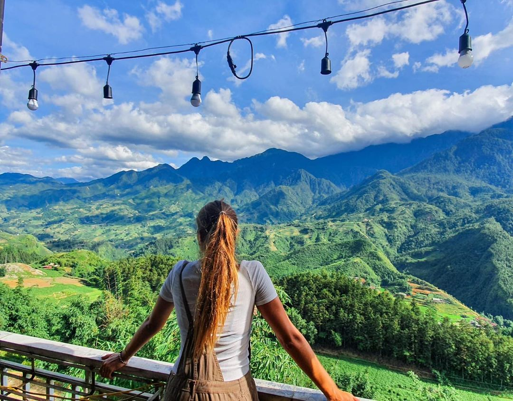

Trải Nghiệm Địa Phương
Đi Bụi Cùng Cheap
Du Lịch Sapa tự túc - xách balo lên đường chinh phục Tây Bắc ngay thôi
Là một đất nước nhiệt đới, những vùng cao nguyên với khí hậu ôn đới luôn là những địa điểm du lịch
“sốt” ở Việt Nam, và Sapa là một trong số đó. Thị trấn sương mù này từ lâu vốn đã được mệnh danh là
vùng đất mê hoặc đối với những người yêu thích khung cảnh thiên nhiên hùng vĩ. Hãy “giắt túi” những
kinh nghiệm du lịch Sapa tự túc dưới đây để chinh phục núi rừng Tây Bắc một cách trọn vẹn nhất.
Tọa lạc trên một sườn núi cao 1.500 – 1.600 mét trên mực nước biển, Sapa là một thị trấn nhỏ của
tỉnh Lào Cai, cách trung tâm tỉnh 40 km và cách Hà Nội 376 km. Với vị trí thuận lợi như thế, Sapa sở
hữu khí hậu nhiệt đới với bốn mùa đa dạng, và đặc biệt là một trong những nơi hiếm hoi ở Việt Nam có
tuyết rơi vào mùa đông.
1. Mùa xuân
Từ cuối tháng 12, hoa đào ở Sapa đã nở rộ, kéo dài đến tận tháng 2, phủ kín nơi đây trong sắc
hồng rực rỡ. Từ tháng 2 tới tháng 3, bạn sẽ được chiêm ngưỡng những rừng hoa mai, hoa mận nở
trắng chân trời.
Tiếp tục đến tháng 3 – tháng 4 là thời điểm đua nở của đủ loại hoa, khi mà tiết trời đã vào xuân
ấm áp. Đây là lúc cả thị trấn ngập tràn sắc hoa ban trắng, hoa tam giác mạch
2.Mùa hè
Cũng là mùa mưa của Sapa nhưng đừng nghĩ mùa hè không phù hợp để du lịch Sapa. Đầu hè và cuối hè là hai thời điểm tuyệt vời để bạn thực hiện một chuyến du lịch Sapa tự túc, nếu bạn luôn say mê khung cảnh ruộng bậc thang hùng vĩ.
3,Mùa thu
Mùa thu là thời điểm yêu thích của những chuyến du lịch Sapa tự túc, bởi đây là mùa hoa tam giác mạch nổi tiếng. Bắt đầu từ giữa tháng 10 đến cuối tháng 11, cả vùng núi rừng Tây Bắc chìm trong sắc hồng của những cánh đồng hoa tam giác mạch.
bạn đã sẵn sàng cho chuyến khám phá thị trấn sương mù này và trải nghiệm những điều “độc nhất” chỉ nơi đây mới có nhé!